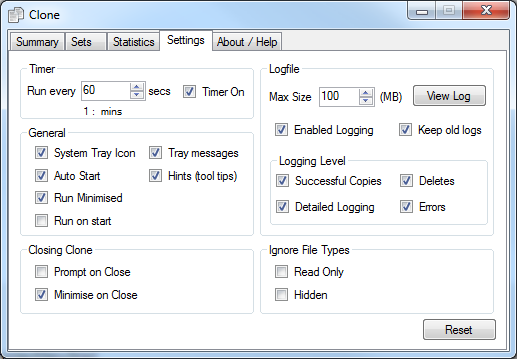
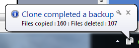
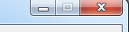

Clone Settings
This screen allows you to configure the way Clone operates. The screen shot belows shows the available options.:-

Timer
This sections allows you to specify the time interval between clone runs. This is specified in seconds, a guide to the number of minutes is also displayed under the seconds. The Timer check box allows you to activate or diabled the scheduled backups. It is recommened that this should be run at frequent intervals. Clone only uses a small amount of system resources so should be run frequently to ensure you backup remains up to date.
General
- System Tray Icon This allows you to hide the normal icon in the task bar and just have a small icon in the system tray. The system tray is at the bottom right hand corner of the screen. This allows you to keep your normal task bar free from cluter and also allows you to "setup and forget" about clone.
- Tray messagesIf you have selected the "System Tray Icon" described above then you can utilise system tray messages and notifications. This will notify you with a ballon type message of how many files were copied and deleted during a backup. A message will be displayed after each backup is complete. An example message is show here : 
- Hints (tool tips) If this is selected then hints known as tool tips will be displayed for all of the windows controls (text boxes labels etc ....). These are intended to assist users, however if they are distracting they can be disabled here.
- Auto Start This option will automatically start clone when windows starts
- Run minimised This option runs clone in a minimised form, this is usual when used with the above option to avoid you having to minise clone when it has automatically started.
- Run on start If you want clone to do a backup as soon as it starts then use this option. If this isn't set clone will wait for the interval set in the Timer options before carrying out a backup.
Closing Clone
These options are relevent only when clone is closed using the X at the top right hand corner of the screen : 
- Prompt on Close Select this if you want to be prompted when clone is closed.
- Minimise on Close Select this if you want to minimise clone when clone is closed.
Logfile
- Enabled Logging If you want to keep a log of what Clone is doing the log file should be enabled using this option. The maximum file of the logfile is configured here. Specifying 0 (zero) means the logfile size should not be managed.
- Keep old logs If you wish to keep old logfiles when the maximum size is reached use this option.
- Logging Level
You can specify what "level" of logging you require. You can choose to record successful copies, errors, deletes and detailed logging. An error may occur when a file is open and Clone attempts to copy it. In this case Clone will not be able to copy the file. This would happen if you are currently editing a document and Clone attempts to copy it. If for Clone is unable to write to the log file logging will be automatically disabled. If you want to limit the file size of the log file then this can be specified in the "Maximum log file size" box. If your log file increases beyond this size then Clone will automatically remove lines from the beginning of the file in order to keep the log file to your specified maximum.
Ignore file types
Clone can be set to ignore files of a certain type. These file types will be exlcuded from all operations, i.e. full backup and realtime backup.
- Read Only Ignore Read Only files
- Hidden Ignore Hidden files. Files such as temporary word files are set as hidden.
|
I want to thank you for Clone which has saved all my files for me. I had used Clone to backup all my files to a second hard drive just before the C drive failed so I have been able to get them all back.
I ordered Clone this morning ! I love it and won’t be able to live without it !!!!! I finally got around to using it with my CD writer last night and I didn’t have any problems (as I expected !). It works perfectly and saves so much time !
I'll be recommending this utility to anyone who needs a back-up solution that is functional without a lot of overblown code.
|